타로 리딩 예시
다시, 희망을 찾는 시간
작은 가능성에 마음을 열어보세요.
작은 가능성에 마음을 열어보세요.
명식부터 대운 · 세운 · 월운까지
두 사람의 기질과 관계의 흐름을 살펴보세요.
미리 보는 리딩 · 예시 화면
오늘의 한 장
다섯 가지 모두 무료. 원하는 운세를 고르고 시작하세요.
선택한 기간에 맞춰 실천 방법을 안내합니다. 미래의 사건이나 발생 시점을 예측하는 기간이 아닙니다.
타로는 78장의 카드가 가진 상징을 바탕으로 지금의 고민을 다른 각도에서 바라보게 돕는 도구입니다. 정답을 알려주기보다 스스로 질문을 정리하는 계기로 삼아보세요.
선택한 별자리의 전통적인 성향을 바탕으로 준비된 문장을 보여주며, 같은 별자리·주제·기간이면 하루 동안 같은 문장이 나옵니다. 실제 천체의 이동을 계산한 예측은 아닙니다.
태어난 해의 12간지(띠)에 연결된 해석을 가볍게 읽어봅니다. 기간을 고르면 생활에 적용하고 돌아볼 실천 안내가 달라집니다.
생년월일과 태어난 시각으로 타고난 기질을 살펴보는 전통적인 해석 방식입니다.
두 사람의 별자리, 띠, 사주를 나란히 놓고 서로의 다른 점과 맞는 점을 알아봅니다.
메이저 아르카나 22장의 의미를 미리 읽어볼 수 있습니다. 카드를 누르면 정방향·역방향 키워드와 상황별 운세를 바로 확인할 수 있어요.
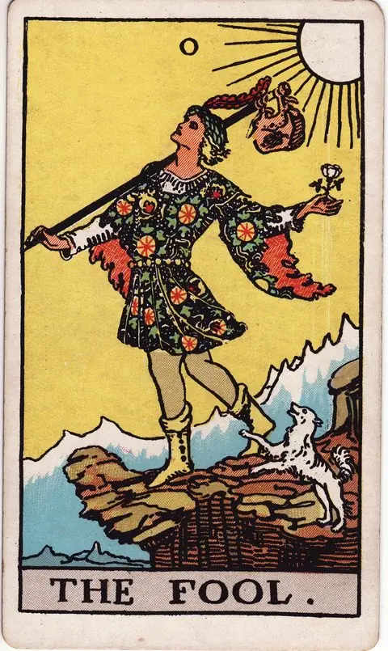
바보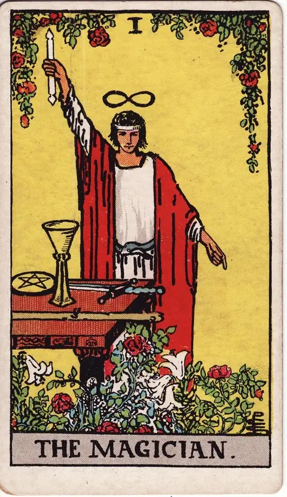
마법사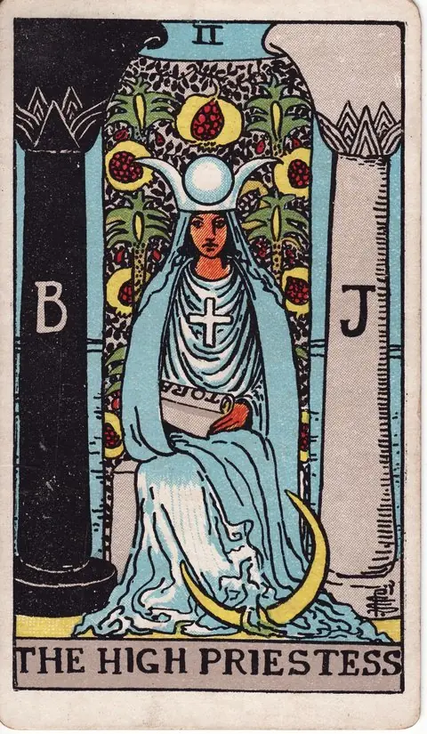
여사제 여황제
여황제
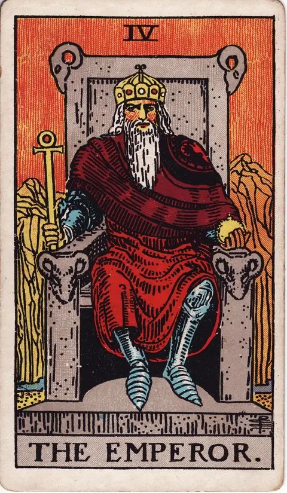
황제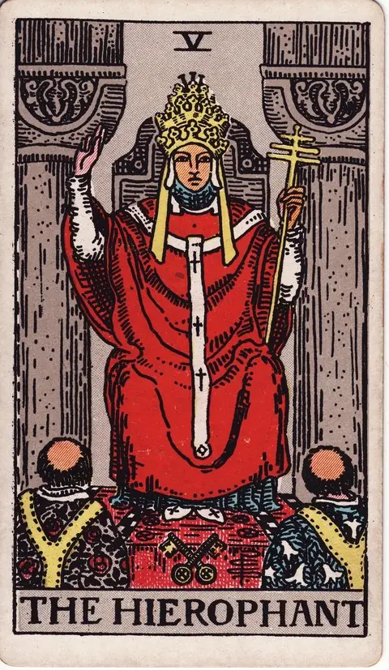
교황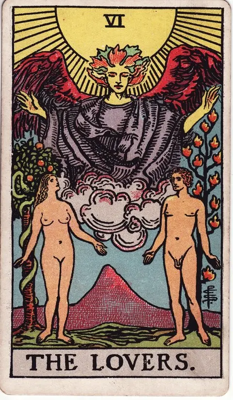
연인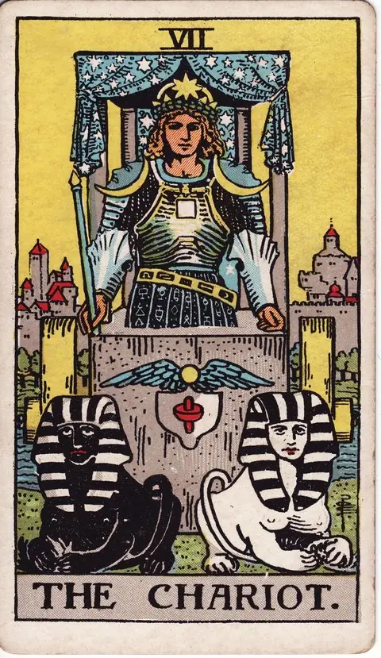
전차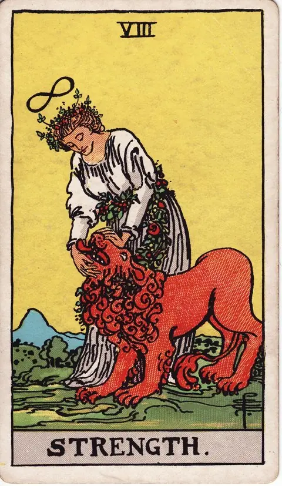
힘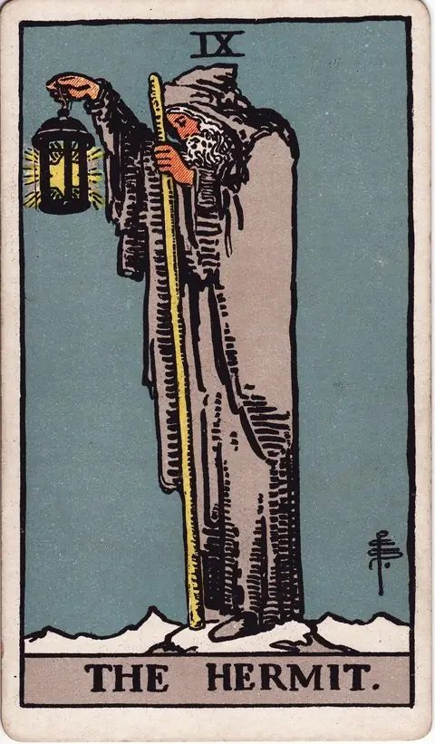
은둔자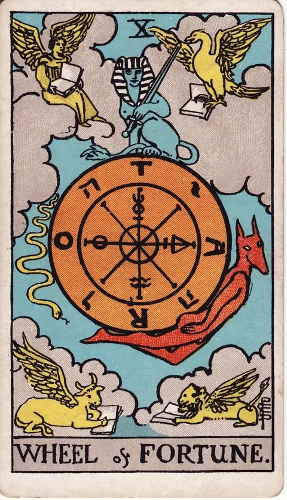
운명의 수레바퀴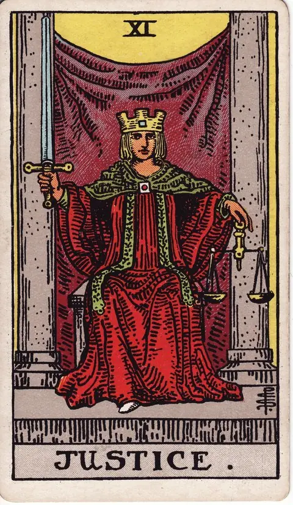
정의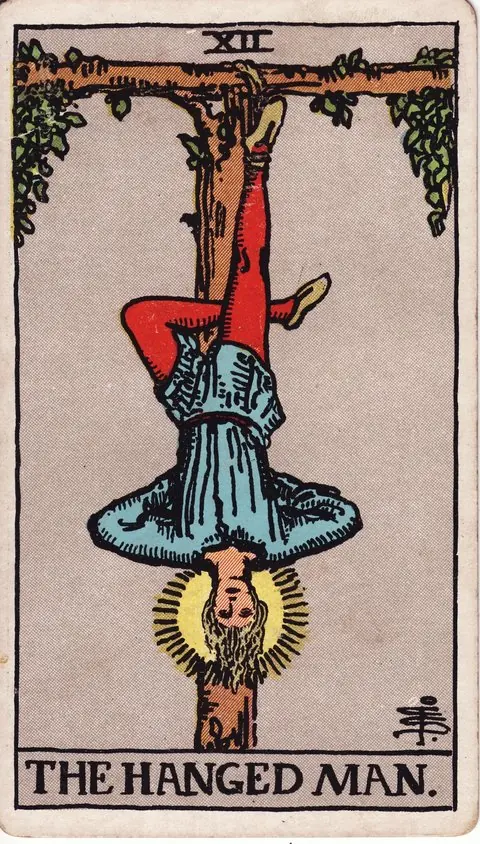
매달린 사람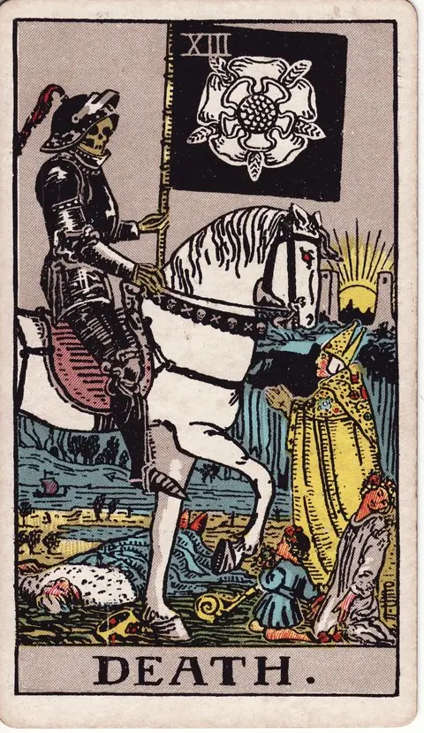
죽음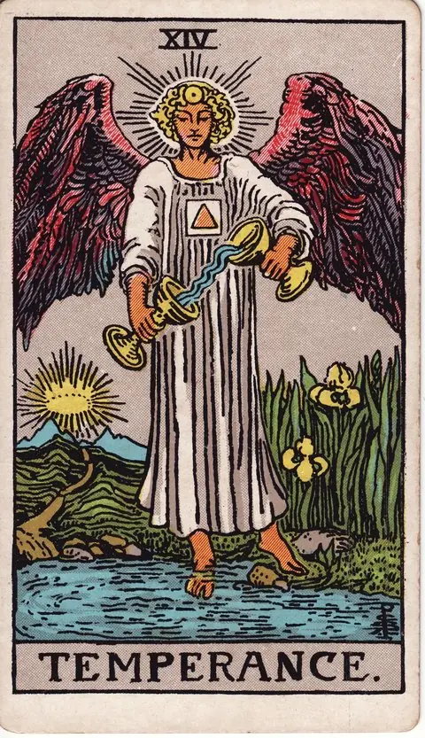
절제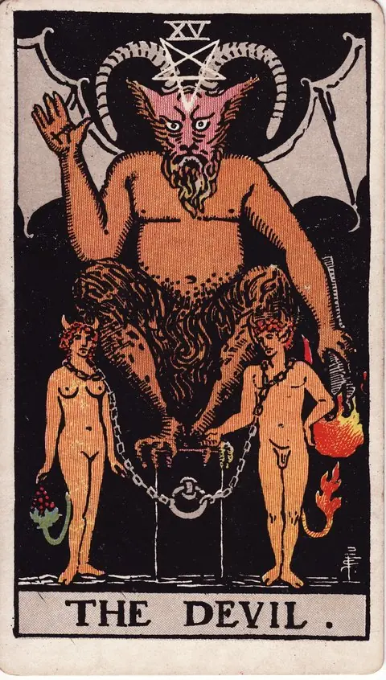
악마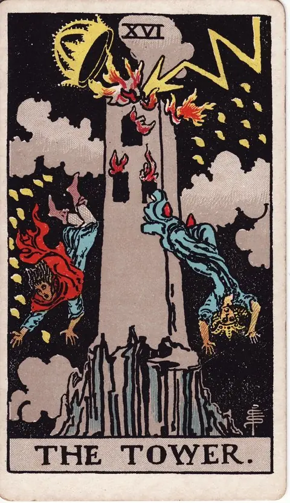
탑 별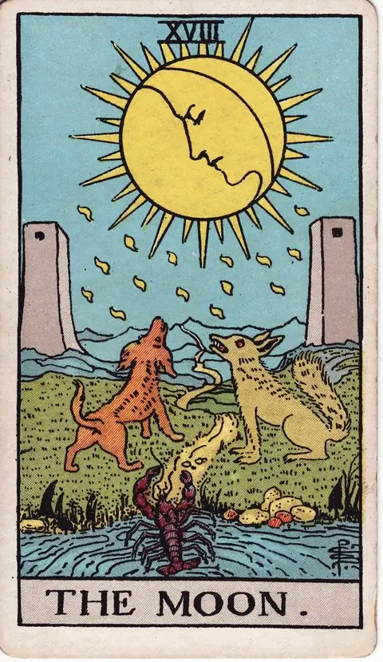
달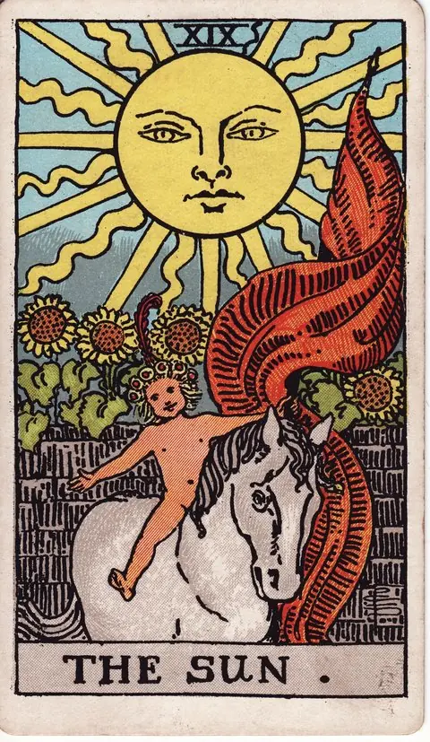
태양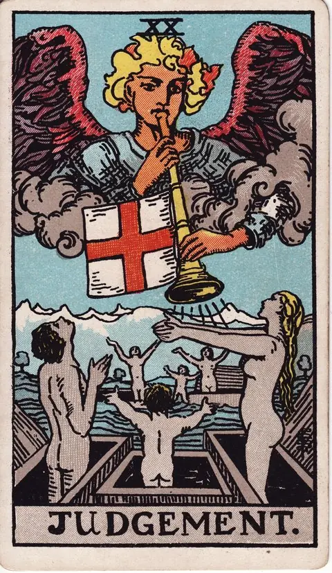
심판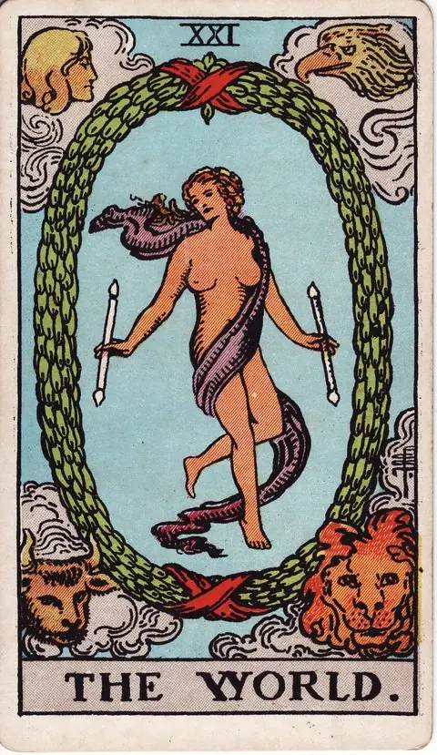
세계점집은 타로, 별자리, 띠운세, 사주, 궁합을 하나의 공간에서 가볍게 즐길 수 있는 무료 운세 서비스입니다. 카드 한 장, 별자리 하나마다 상황에 맞는 문장을 따로 정성껏 담았습니다.
운세는 가볍게, 선택은 당신답게.
오락 목적의 콘텐츠이며 전문적인 법률·의료·재정·심리 상담을 대체하지 않습니다.